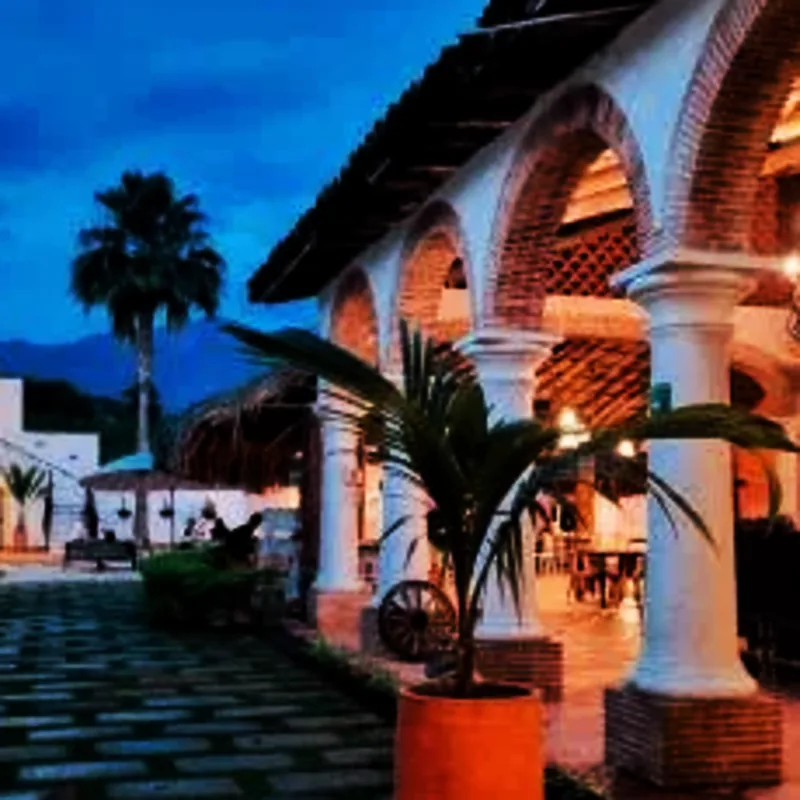

Directorio de Hosterías
Guía Oficial de Hospedaje 2026
Encuentra y compara hosterías y hoteles en Santa Fe de Antioquia: precios actualizados, día de sol, todo incluido y atención personalizada. A 78 km de Medellín.
Ver HosteríasDirectorio de Hosterías
Santa Fe de Antioquia
Disfruta del clima cálido (26°C promedio) de Santa Fe de Antioquia en hosterías y hoteles con piscina, jacuzzi y zonas húmedas. El plan perfecto a solo 78 km de Medellín.
¿Por qué Reservar con Nosotros?
Somos un portal independiente que te conecta directamente con las hosterías. Sin comisiones ocultas, sin intermediarios. Tú eliges, la hostería te recibe.

Pasadía
Piscina, almuerzo típico y áreas de descanso. El escape perfecto a menos de 2 horas de Medellín. Desde $75.000 por persona.

Paquetes
Alimentación completa, actividades y alojamiento en un solo precio. Llega, disfruta y despreocúpate.

Piscina
Las mejores hosterías con piscina en Santa Fe de Antioquia: olímpica, infantil y jacuzzi.

Mascotas
Hosterías que reciben a tu mascota. Disfruta en familia completa sin dejar a nadie atrás.

Romántico
Hoteles boutique con jacuzzi, desayuno en cama y experiencias íntimas en el Patrimonio Histórico Nacional.

Economía
Hosterías económicas en Santa Fe de Antioquia sin sacrificar calidad. Desde $87.000 por persona con alimentación incluida.
Ubicación privilegiada
Estas hosterías y hoteles están a pocas cuadras de la Plaza Mayor, la Catedral y los principales atractivos del centro histórico.
Centro · 7 cuadras del parque
Ubicación céntrica, ambiente familiar y precios accesibles. Ideal para grupos y parejas que quieren estar cerca de todo.
Zona centro · Ambiente festivo
Bar-restaurante con piscina y ambiente animado. Perfecto para grupos de amigos y celebraciones.
Frente al parque · Económico
La opción más económica y mejor ubicada del centro histórico. Habitaciones cómodas frente al Parque Principal.
Patrimonio Histórico
Santa Fe de Antioquia, declarada Patrimonio Histórico Nacional en 1960, alberga algunos de los hoteles coloniales más hermosos de Colombia.
Centro Histórico · #1 TripAdvisor
El hotel mejor valorado de Santa Fe de Antioquia. Arquitectura colonial restaurada con piscina, spa y restaurante gourmet.
Entrada del municipio · Gran capacidad
El hotel con mayor capacidad de Santa Fe. 60 habitaciones, 16 suites, piscina y espacios para eventos sociales y corporativos.
Centro · Bicicletas gratis
Hotel boutique con bicicletas gratuitas para recorrer el pueblo, piscina y desayuno incluido. Una experiencia auténtica.
Información Útil


¿Tienes dudas?
Que tipo de plan buscas?
Cuantas personas y cuando?
Tus datos de contacto
Confirma tus datos